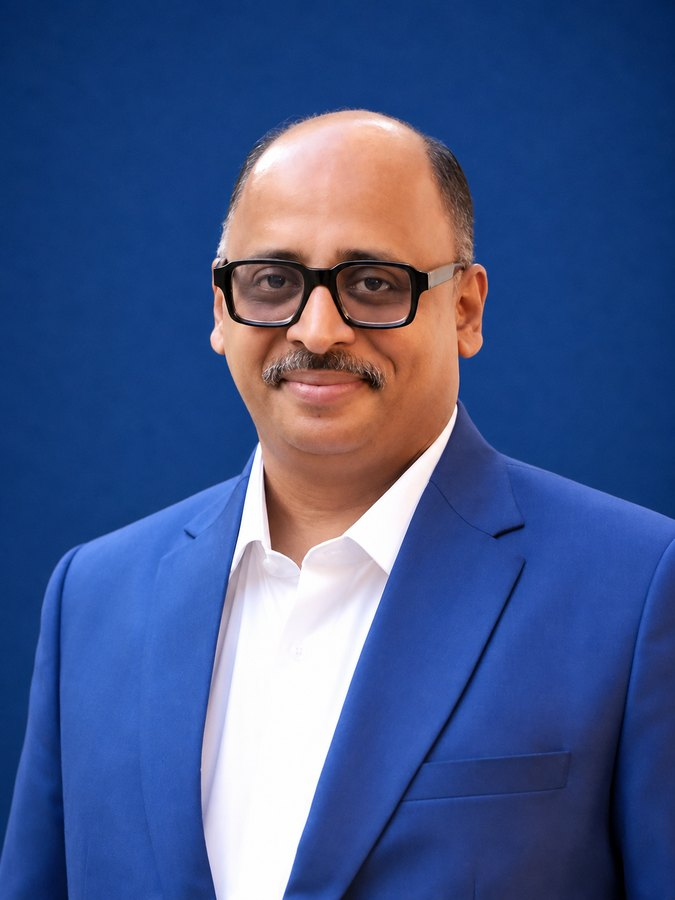
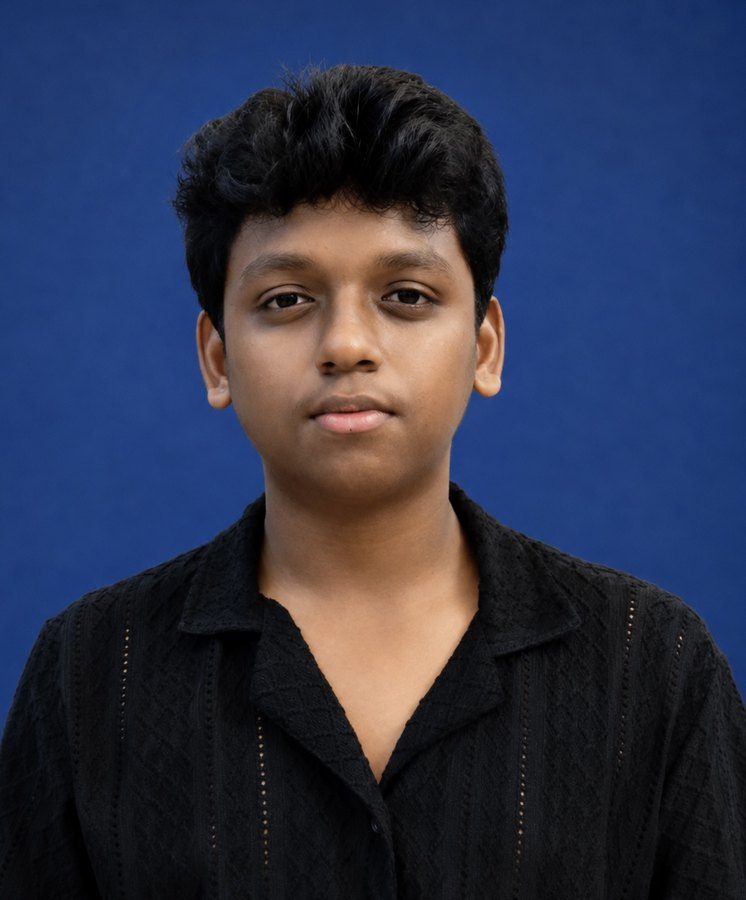
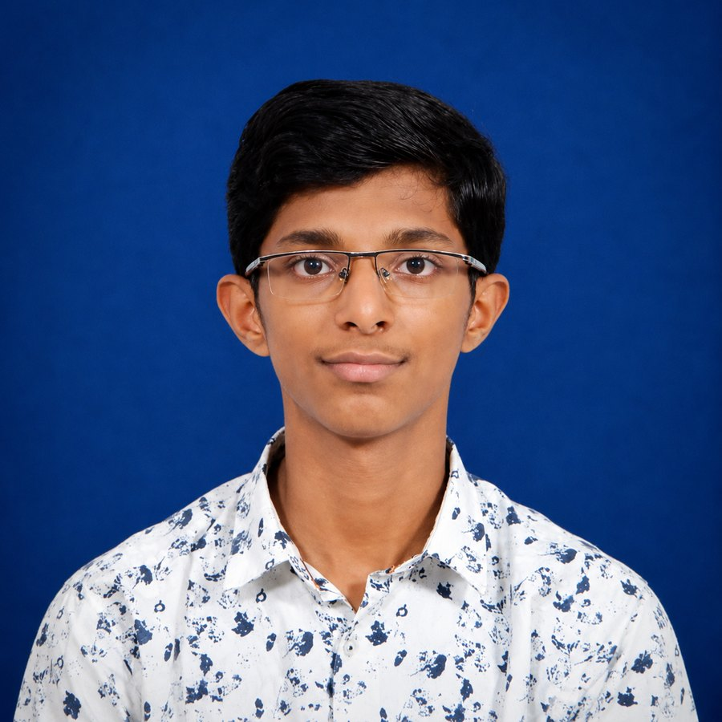
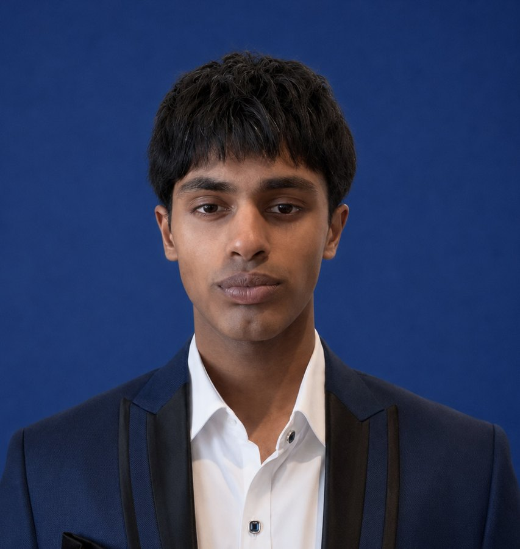

A Volunteer Team, Worldwide
Malankara Map is researched, verified, and kept up to date by a global team of volunteers — an executive council, diocesan and district directors, and a handful of coordinators spread from Kerala to Kochi, Sydney to Chicago.
The four who guide the project as a whole — its Global Director, Assistant Global Director, Global Secretary, and Spiritual Advisor.
Andrew is an eleventh-grade student in the suburbs of Chicago, Illinois, where he attends the International Baccalaureate Academy at Elgin High School. Baptized by Fr. Shibu Venad Mathai (an episcopal candidate), he serves his home parish as an acolyte. Andrew founded Malankara Map and continues to lead the project worldwide as its Global Director, coordinating the diocesan and district directors who help keep this directory current.
Andrew is a ninth-grade student in Warrington, Pennsylvania. Baptized in 2011 by H.G. Dr. Gabriel Mar Gregorios, he now serves as an acolyte at Bensalem St. Gregorios Orthodox Church and is an active member of the MGOCSM and other youth ministries. As Assistant Global Director, he helps coordinate the team behind Malankara Map — and the site’s background music is his own contribution to the project.
Rinzu spent most of her life in Delhi before moving to Calgary, Canada, where she lived until 2023; she now makes her home in Kochi, India. She recently completed a four-month course in Orthodox Christian Nurture run by the Calcutta Diocese and is preparing to enroll in the Church’s two-year Divyabodhanam programme. An author in her own right, she regularly writes poetry and short stories, and serves as both Global Secretary and Delhi Diocesan Director.
Rev. Sdn. Stephan is believed to be the first clergyman of the Malankara Church born in New Zealand. He is currently based in Sydney, Australia, where he is pursuing a Master of Theological Studies at St. Cyril’s Coptic Seminary, and will depart in October for a six-month course of study at the Kottayam Seminary. He serves Malankara Map as Spiritual Advisor.
Each overseeing the directory's accuracy for their own diocese, from Kerala to the diaspora.


A closer level of coverage, for districts with a concentration of parishes of their own.


Additional members supporting the project in specialised roles.